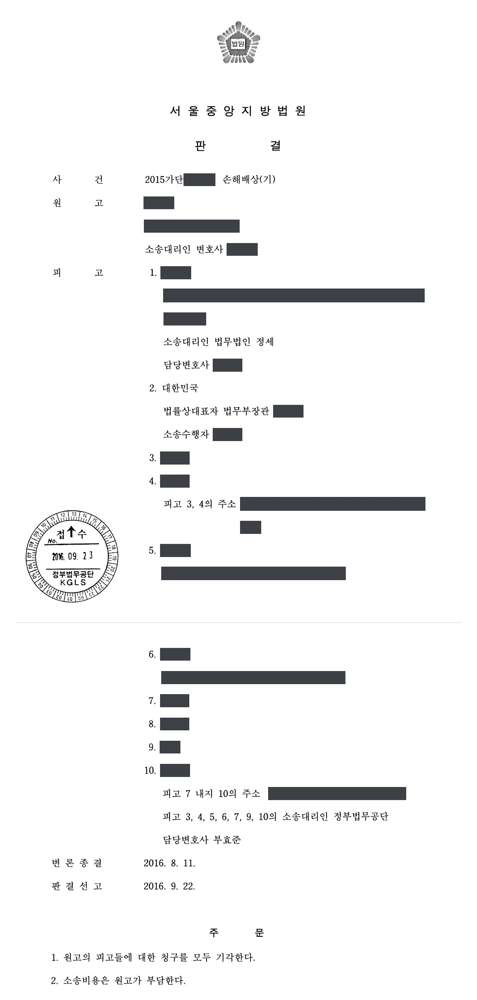

법관의 재판을 이유로 한 손해배상 청구소송
서울중앙지방법원 2015가단107739 · 담당변호사 부효준
판결문

사건의 요지
확정된 민사판결에서 패소한 당사자가 그 판결이 명백한 오판이라고 주장하며 제1심부터 상고심까지 재판을 담당한 법관들과 국가, 상대방 당사자를 상대로 손해배상을 구한 사건입니다. 법관들을 대리하여, 법관의 재판에 대한 배상책임은 위법·부당한 목적이나 직무상 기준의 현저한 위반 같은 특별한 사정이 있어야 인정된다는 법리에 따라 다투었고, 법원은 원고의 청구를 모두 받아들이지 않았습니다.
사건의 주요 내용
원고는 앞선 민사소송(보관금 반환 청구)에서 제1심, 항소심, 상고심을 거쳐 일부 패소 판결이 확정된 당사자입니다. 원고는 상대방에게 청구권이 남아 있지 않았는데도 상대방이 법원을 속여 판결을 받아 냈고, 각 심급의 재판을 담당한 법관들이 명백한 오판을 하였다고 주장하며, 상대방 당사자와 법관들, 국가를 상대로 연대하여 손해를 배상하라는 소를 제기하였습니다.
부효준 변호사는 피고가 된 법관들을 대리하였습니다. 법원은 2016년 9월 원고의 청구를 모두 받아들이지 않았습니다.
쟁점
- 법관의 재판상 직무행위가 국가배상법 제2조 제1항의 위법한 행위가 되기 위한 요건이 무엇인지
- 확정판결이 오판이라는 주장만으로 재판을 담당한 법관들의 손해배상책임이 인정될 수 있는지
- 앞선 소송의 제소행위가 소송사기에 해당하는지
원고의 주장
- 앞선 소송의 상대방이 이미 정산이 끝난 돈을 청구하여 법원을 기망하였으므로 소송사기에 해당하고, 그로 인하여 판결금 상당의 손해를 입었다고 주장하였습니다.
- 각 심급의 담당 법관들이 일반인의 건전한 상식에 반하는 명백한 오판으로 잘못된 판결을 하였으므로, 법관들과 국가는 상대방 당사자와 연대하여 손해를 배상할 의무가 있다고 주장하였습니다.
부효준 변호사의 주장
- 재판의 잘못은 상소 등 불복절차로 바로잡도록 되어 있으므로, 재판 결과가 불리하였다는 사정만으로 법관의 재판상 직무행위가 위법하게 되는 것은 아니라고 다투었습니다.
- 법관의 재판에 대하여 배상책임이 인정되려면 법관이 위법 또는 부당한 목적을 가지고 재판을 하였거나 직무수행상 준수하여야 할 기준을 현저하게 위반하였다는 등의 특별한 사정이 있어야 하는데, 원고가 제출한 증거로는 그러한 사정이 인정되지 않는다고 주장하였습니다.
법원의 판단
법원은 먼저 앞선 소송의 상대방에 대한 청구에 관하여, 원고가 제출한 증거만으로는 그 제소행위가 소송사기에 해당한다고 단정하기에 부족하다고 보았습니다.
법관들과 국가에 대한 청구에 관하여는, 법관의 재판으로 인한 손해배상책임이 인정되려면 법관이 위법 또는 부당한 목적을 가지고 재판을 하였거나 직무수행상 준수할 기준을 현저하게 위반하는 등 권한의 취지에 명백히 어긋나게 권한을 행사하였다고 인정할 만한 특별한 사정이 있어야 한다는 대법원 판례의 기준을 적용하였습니다. 그리고 원고가 제출한 증거들만으로는 그러한 특별한 사정을 인정하기 어렵다고 보아 원고의 청구를 모두 받아들이지 않았습니다.
법관이 행하는 재판사무의 특수성과 그 재판과정의 잘못에 대하여는 따로 불복절차에 의하여 시정될 수 있는 제도적 장치가 마련되어 있는 점 등에 비추어 보면, 법관의 재판으로 인한 손해배상책임이 인정되기 위해서는 우선 법관의 재판에 법령의 규정을 따르지 아니한 잘못이 있어야 하고, 가사 그러한 잘못이 있다고 하더라도 이로써 바로 그 재판상 직무행위가 국가배상법 제2조 제1항에서 말하는 위법한 행위로 되어 국가의 손해배상책임이 발생하는 것이 아니라, 그 법관이 위법 또는 부당한 목적을 가지고 재판을 하였다거나 법이 법관의 직무수행상 준수할 것을 요구하고 있는 기준을 현저하게 위반하는 등 법관이 그에게 부여된 권한의 취지에 명백히 어긋나게 이를 행사하였다고 인정할 만한 특별한 사정이 있어야 한다(대법원 2001. 3. 9. 선고 2000다29905 판결, 2001. 4. 24. 선고 2000다16114 판결, 2001. 10. 12. 선고 2001다47290 판결 등 참조).
서울중앙지방법원 2015가단107739 판결 이유 '2. 판단' 나.항
※ 판결 이유 가운데 이 사건의 판단 기준이 된 부분을 그대로 옮긴 것으로, 당사자 이름 등은 가리고 금액은 어림으로 적었습니다.
이 사건이 보여 주는 것
재판 결과에 대한 불만은 상소나 재심 같은 불복절차로 다투는 것이 원칙이고, 재판을 담당한 법관이나 국가에 손해배상을 구하는 방법으로는 판결의 당부를 다시 다툴 수 없다는 점을 보여 주는 사건입니다. 법관의 재판에 대한 배상책임은 위법·부당한 목적이나 직무상 기준의 현저한 위반 같은 특별한 사정이 증명된 경우에만 인정됩니다.
비슷한 처분을 받으셨다면
행정처분은 처분이 있음을 안 날부터 90일 이내에 행정심판이나 취소소송으로 다투어야 하고, 기간이 지나면 돌이킬 수 없는 처분은 집행정지를 서둘러야 합니다. 처분서를 받은 날짜부터 확인해 드립니다.